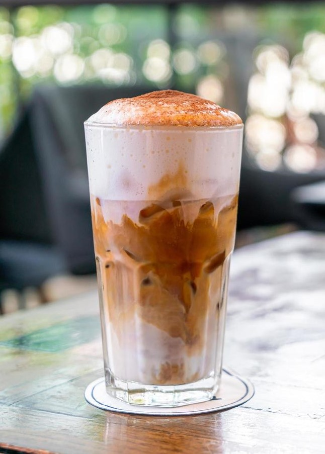
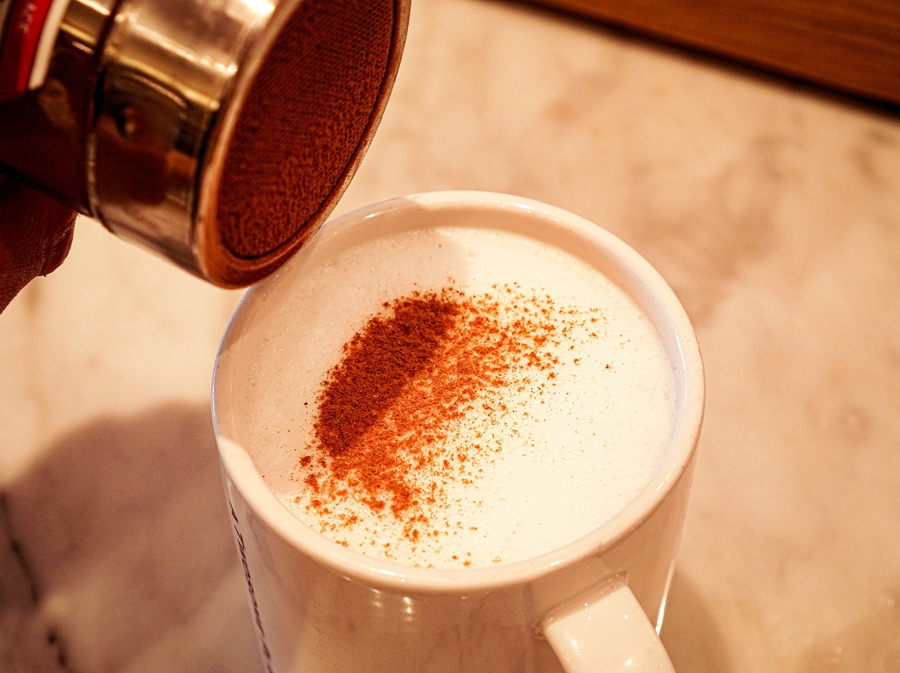

Brewing coffee requires the use of coffee grounds, but the process of brewing can vary!
Here are some example brewing methods:
Coffeemaker (e.g Nespresso, Keurig, OXO, etc.)
Pour Over
French Press
AeroPress
All brewing methods will use a coffee filter, scooping coffee grounds into the filter (2 tbsp to 6 oz water), and filtering the grounds with hot water.
Taste: Generally bitter and acidic, but additional notes (e.g. citrus, chocolate, spice, etc.) of flavor depend on the region the coffee beans came from!
Hot Americano
Hot Americanos consist of simply espresso and hot water.
This is an espresso-based drink, meaning it uses finely ground coffee beans that are filtered with pressurized hot water to pull espresso shots for the drink.
Typically, this requires the use of espresso machines to filter the espresso correctly, but it still requires a lot of hands-on activity to measure the amount of espresso needed and to monitor the freshness of the pulled shots!
What makes this different from regular brewed coffee is the higher caffeine content and stronger, roastier coffee flavor.
Taste: Roasty and crisp
Hot Latte
Hot Lattes are made with espresso and steamed milk.
This is an espresso-based drink, meaning it uses finely ground coffee beans that are filtered with pressurized hot water to pull espresso shots for the drink.
Typically, this requires the use of espresso machines to filter the espresso correctly, but it still requires a lot of hands-on activity to measure the amount of espresso needed and to monitor the freshness of the pulled shots!
Steaming milk will require a machine that includes a steam wand, often built into espresso machines.
Taste: Rich, creamy, and smooth
Hot Cappuccino
Hot Cappuccinos are made with espresso, steamed milk, and steamed milk foam.
Traditionally, the steamed milk and foam are in equal parts, but it's up to personal preference on the ratio of milk to foam.
This is an espresso-based drink, meaning it uses finely ground coffee beans that are filtered with pressurized hot water to pull espresso shots for the drink.
Typically, this requires the use of espresso machines to filter the espresso correctly, but it still requires a lot of hands-on activity to measure the amount of espresso needed and to monitor the freshness of the pulled shots!
Steaming milk requires a machine that includes a steam wand, often built into espresso machines.
Taste: Creamy, light, and fluffy
Cold Coffee
Iced Coffee
Iced coffees require the use of coffee grounds, but the process of brewing can vary!
Here are some example brewing methods:
Coffeemaker (e.g Nespresso, Keurig, OXO, etc.)
Pour Over
French Press
AeroPress
All methods here require using a coffee filter, scooping coffee grounds into the filter (2 tbsp to 6 oz water), filtering the grounds with hot water, but brewing it all over a cup of ice to make the coffee cool.
Taste: Generally bitter and acidic, but additional notes (e.g. citrus, chocolate, spice, etc.) of flavor depend on the region the coffee beans came from!
Iced Americano
Iced Americanos consist of simply espresso, room-temperature/cold water, and ice.
This is an espresso-based drink, meaning it uses finely ground coffee beans that are filtered with pressurized hot water to pull espresso shots for the drink.
Typically, this requires the use of espresso machines to filter the espresso correctly, but it still requires a lot of hands-on activity to measure the amount of espresso needed and to monitor the freshness of the pulled shots!
Taste: Roasty, crisp, and refreshing
Iced Latte
Iced Lattes are made with espresso, cold milk, and ice.
This is an espresso-based drink, meaning it uses finely ground coffee beans that are filtered with pressurized hot water to pull espresso shots for the drink.
Typically, this requires the use of espresso machines to filter the espresso correctly, but it still requires a lot of hands-on activity to measure the amount of espresso needed and to monitor the freshness of the pulled shots!
Taste: Creamy, smooth, and slightly sweet

Iced Cappuccino
Iced Cappuccinos are made with espresso, cold milk, ice, and milk foam.
This is an espresso-based drink, meaning it uses finely ground coffee beans that are filtered with pressurized hot water to pull espresso shots for the drink.
Typically, this requires the use of espresso machines to filter the espresso correctly, but it still requires a lot of hands-on activity to measure the amount of espresso needed and to monitor the freshness of the pulled shots!
Milk foam can be made using a milk frother (not steamer) on cold milk to create a fluffy texture on the coffee.
Taste: Creamy, velvety, and slightly sweet
Customize it!
Cream & Sugar
Missing just a hint of sweetness and maybe even creaminess? Add cream and/or sugar to your liking so that you can enjoy a satisfying cup of coffee for the day!
Cream is often half-and-half cream, but you can also add more milk to it. If people want it really creamy, heavy cream is also always an option.
Sugar/sweetener can be white sugar, raw sugar, brown sugar, a natural sweetener, honey, anything!
Alternative Milks
For those with dietary restrictions or prefer the flavor of alternative milks, some of which may include slight vanilla flavoring, try customizing your coffee with a milk that fits your palate!
The most common alternative milks are oatmilk, almondmilk, soymilk, and coconutmilk, but there are plenty more milks to try out.
Syrup Flavorings
If you like your coffee on the sweeter side and are not afraid to try new flavors, there's a wide range of syrup flavorings such as vanilla, hazelnut, caramel, lavender, peppermint, and more!
These are most commonly added to coffees with some milk or cream in them to make for a flavorful coffee.

Powder
If you do not want too much flavoring or would like something to top off some foamy drink, sprinkle on some powder or spice for an added flavor!
Some fan favorites are cinnamon, turmeric, cocoa, nutmeg, allspice, or even protein powder!